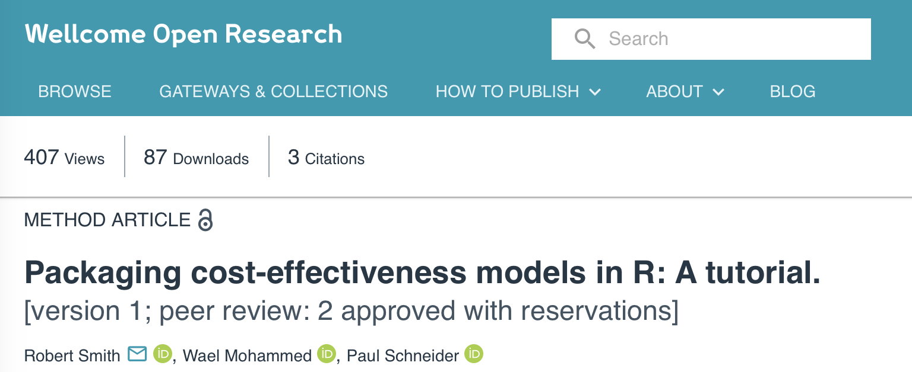

👋 Welcome to EsCHER’s R-evolution
Mastering R Package Development for Health Economics workshop
About EsCHER
Erasmus Centre for Health Economics Rotterdam (EsCHER) is:
- part of Erasmus University Rotterdam
- consolidates unique and leading expertise in health economics
- with over 100 health economists and health economic researchers
We thank EsCHER for the funding of this day.
About us
Eline Krijkamp
- 2022 - now: Postdoc researcher @ESHPM 💻
- 2018 - 2022: PhD student @Erasmus Medical Center 🎓
- 2017 - 2020: Educational innovation team @NIHES 📚🏫
- 2014 - 2016: MSc (res) Health Sciences @NIHES 🎓
- 2013 - 2015: MSc Health Economics Policy and Law @ESHPM
- 2010 - 2013: BSc Health Sciences and Biomedical Sciences @VU University Amsterdam 🎓
About us
Frederick Thielen
- 2021 - now: Assistant professor @ESHPM 🎓
- 2023 - now: Senior researcher @Trimbos 💻
- 2015 - 2020: PhD student @ESHPM 🎓
- 2013 - 2015: MSc (res) Health Sciences @Maastricht University 🎓
- 2010 - 2013: BSc European Public Health @Maastricht University 🎓
- 2009 - 2009: Nurse @University Medical Center Aachen 🩺
Why are we here today?
Eline
- Miss working with R a lot
- Ambition to integrate R more on the ESHPM department
- Keep up with the newest R features
- Inspire others to work with R
Frederick
- Using R daily
- No formal data science education and mostly self-taught
- Want to learn new advanced R-skills
Why are you here today? 🫵
Introduce yourself on paper
On a post-it, write down:
- Your name
- Your background & current occupation
- One hobby
- What you hope to get out of this course
Give the post-it to the person next to you

Why are they here today? 👉
Mix and gossip positively
- 📣 Introduce the person next to you to someone else and 🔄 exchange the post-it
(4. 📣 Introduce the person to the group)
🛜 Course content
Get all course content on bit.ly/escher-package
Need internet?
- SMS
eur96to telephone number 06-35250006. - You will receive a login name and password for the entire day by SMS.
☀️ Our day
| Time | Title | Location |
|---|---|---|
| 09:30 - 10:00 | ☕️ Arrival & Coffee | Open space on the 7th floor |
| 10:00 - 10:30 | 👋 Welcome & Introduction | J7-55 |
| 10:30 - 11:45 | 🎤 Keynote by Gianluca Baio | J7-55 |
| 11:45 - 12:30 | 🥗 Lunch | Open space on the 7th floor |
| 12:30 - 14:45 | 💻 Coding exercise: build your own package | J7-43, J7-45, J7-47 |
| 14:45 - 16:00 | 🧊 Drinks | Open space on the 7th floor |
🎤 Keynote by Gianluca
🥗 Lunch
💻 Coding exercise: build your own package
Step-by-step guide
- 💻 Create a new package with your group
(12:30 - 13:30)
📣 Make your package publicly available through GitHub
(13:30 - 14:00)⬇️ Download & install a package from another group to test it
(14:00 - 14:30)📝 Write a short review on the package you tested
(14:30 - 14:45)
Part 1
12:30 - 13:30
Create a new package with your group:
- decide on a package name
- select or write at least one dataset and one function you want to include
- make sure to document everything properly
Part 2
13:30 - 14:00
Share your package with the world:
- upload your package to GitHub
- add the GitHub link to the overview on OneDrive
- make sure to include a README file
If you don’t use GitHub, you can save your package in the OneDrive folder
Part 3
14:00 - 14:30
Download and install a package from another group: see schedulde in OneDrive
- test the package
- does the documentation make sense?
Part 4
14:30 - 14:45
Write a short review on the package you tested:
- what did you like?
- what could be improved?
🏁 Closing
Outlook
This one-day workshop gave jsut a brief introduction to the world of R and package development.
There is much more out there, especially for HTA researchers!
